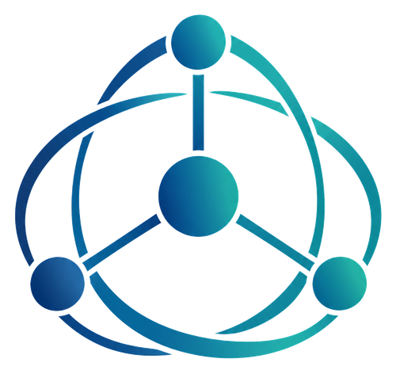

IT & network diagnostics
Networks, Wi-Fi, computers, connected devices, reliability, configuration, and remote IT troubleshooting.

Independent consulting for businesses
Office networks, connected equipment, industrial automation, or operational inefficiencies can have causes that are easy to miss when examined one component at a time.
Vitek looks across hardware, software, controls, operating practices, and their interactions to identify causes and evaluate practical improvements.
Diagnose connectivity, Wi-Fi coverage, configuration, performance and equipment interactions.
Investigate recurring symptoms and related systems to identify underlying causes.
Assess industrial robots, manufacturing automation and interactions among mechanics, controls, electronics and software.
Obtain an independent assessment of possible optimization, alternatives and expected benefits.
Review building-system performance, energy use and operational improvement opportunities.
Look for systemic causes of repetitive tasks, interruptions, errors and reduced productivity.
Networks, Wi-Fi, computers, connected devices, reliability, configuration, and remote IT troubleshooting.
Industrial robots and automated manufacturing equipment, including robotic welding, press brakes, and CNC punching systems. Diagnostics, integration and process optimization within applicable professional scope.
Cross-disciplinary problem analysis, equipment evaluation, production efficiency, building operating costs, and independent technical second opinions.
“Vitek integrated our robots into the computer network and streamlined our production processes increasing work efficiency up to 60%, resulting in savings of over $100,000 annually.”
Karl-Gustav Wahlstrand
LinkedIn recommendation relating to earlier industrial automation work
Quoted results concern a previous project and are not projections or guarantees for future engagements.
Explain what is happening, what you have already tried, or share the recommendation you received.
Vitek will review your inquiry and reply whether he can help, what may be involved, and what it could cost.
If you wish to proceed, agree on the scope before any paid work. Receive findings and practical next steps.